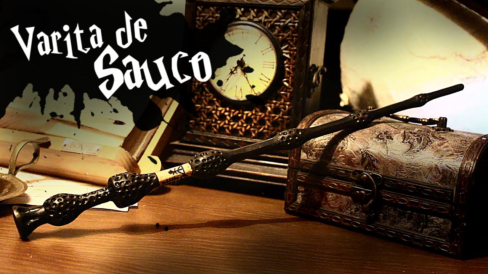
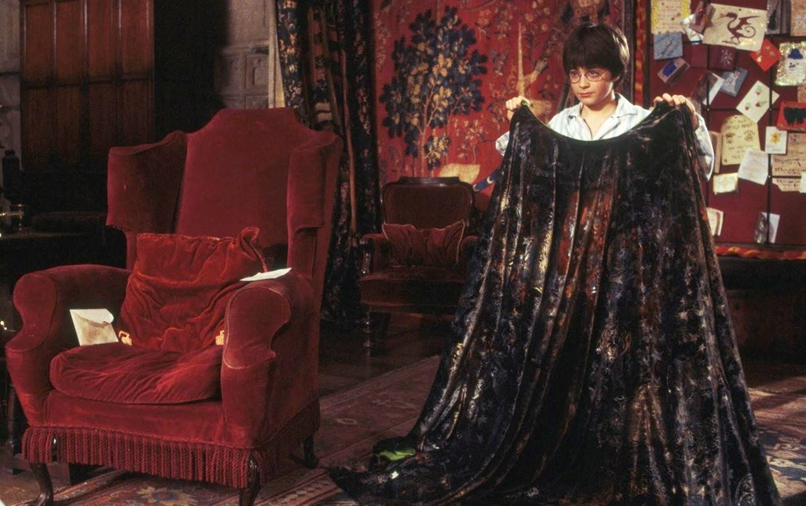

En el septimo y ultimo libro de la saga Harry Potter and The Deathly Hallows, aparecen unos objetos llamados las Reliquias de la Muerte (Deathly Hallows en ingles). Muchos creian que solo era una leyenda, y muchos padres magos se la leian a sus hijos cuando eran pequeños ya que es un cuento llamado La Leyenda de los Tres Hermanos el cual es parte de un libro llamado Los Cuentos de Beedle el Bardo.
Las 3 Reliquias
Las reliquias pasaron por manos de muchas personas, y solo una persona ha tenido las 3 reliquias juntas para convertirse en Maestro de la Muerte; esa persona es el famoso Harry Potter. El simbolo de las reliquias es un triangulo divido en dos por una linea recta y a su vez dentro tiene un circulo. El triangulo representa la Capa de la Invisibilidad, el circulo representa la Piedra de Resurreccion y la linea recta representa la Varita de Sauco. Muchos magos de Bulgaria (entre ellos Viktor Krum) piensan que el simbolo le pertenece al Mago Tenebroso Gellert Grindelwald. No le pertenece, lo que sucede es que Grindelwald estuvo durante toda su juventud, obsesionado con los Deathly Hallows.
La Varita de Sauco

Esta reliquia ha sido la mas codiciada por muchos magos a lo largo de la historia. Fue creada por Antioch Peverell; es la varita mas poderosa de todas, y nos damos cuenta de ello cuando Harry Potter la utiliza para reparar su antigua varita (al parecer, segun el fabricante de varitas Ollivander, eso es imposible de lograr).
La Capa de Invisibilidad

Esta reliquia fue creada por el mas pequeño de los Peverell, Ignotus Peverell. La capa tiene como funcion esconder al que la tiene puesta y nadie puede ver a traves de ella. Esta reliquia fue pasada de generacion en generacion hasta llegar a manos de James Potter. Albus Dumbledore se la pide prestada a James y luego se la devuelve a su legitimo heredero, Harry Potter.